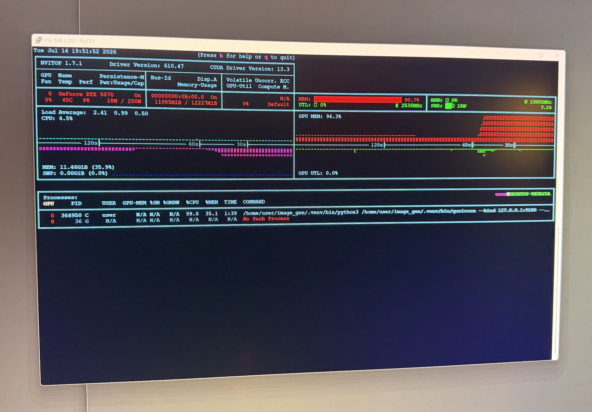

Goal: wiring Hugging Face models into my local llm (Ollama) app, testing prompt-following, and seeing how far I can push a 12GB RTX 5070 before the system starts leaning hard on the CPU.
The short version: it works, but only because the stack is allowed to spill parts of the model back to system memory.
The current setup
The image UI lives on my web server, but the GPU does not. The request path looks like this:
/ui
-> Flask app on web server
-> SSH tunnel to the GPU box
-> WSL Ubuntu image server
-> RTX 5070
The GPU server is a small diffusers service running behind Gunicorn. Right now I have three model paths:
- SDXL for the fast path.
- Stable Diffusion 3.5 Medium for better prompt following.
- FLUX.1-schnell for sharper experiments when I can tolerate slower runs.
SDXL fits the 5070 pretty comfortably in fp16. The more interesting cases are SD 3.5 Medium and FLUX. Those are Hugging Face/diffusers pipelines with CPU offload enabled so they can run on a 12GB card at all.
The screenshot

The card is sitting around 11GB used out of 12GB..
That is what I was calling “CPU overflow” while working on it. More precisely, it is CPU offload: diffusers is moving parts of the model between CPU memory and GPU memory so the model can fit. My PC is completely useless in the meantime. The upside is obvious. A model that does not fit cleanly in VRAM can still run. The downside is also obvious. PCIe transfers and CPU-side work become part of the inference loop, so GPU utilization can look weird and the whole request gets slower (by a lot).
The confusing part is that nvtop can make the GPU look idle while the job is still very much in progress. If the pipeline is between GPU kernels, loading weights, moving blocks, or waiting on CPU-side work, GPU utilization can read near zero even though the run is not stalled.
What I changed to make it survivable
The server only runs one generation at a time. That is not elegant, but it is the correct tradeoff for this machine.
The llm webapp also treats image generation as an async job. It returns quickly, then the browser polls for the result. That avoids the Cloudflare first-byte timeout problem (yes, I’m using Cloudflare…long story I will explain another time), and it makes slow CPU-offloaded generations acceptable instead of looking like the page froze.
There is also cleanup logic around the GPU:
- unload idle image models after a few minutes
- empty the CUDA cache after unloads
- evict other local GPU workloads before large image generations
- retry once after an out-of-memory error
That is the difference between a fun demo and something I can actually leave running on the homelab.
What I learned
The 12GB 5070 is enough for useful local image generation, but it is not magic. SDXL is the comfortable baseline. FLUX and SD 3.5 Medium are possible because Hugging Face/diffusers gives me the escape hatch of CPU offload.
That escape hatch has a cost. When the model spills over, latency gets worse and monitoring gets less intuitive. But for a local tool where I care more about control than throughput, that is a good trade.
The next step is making the UI more honest about what is happening.